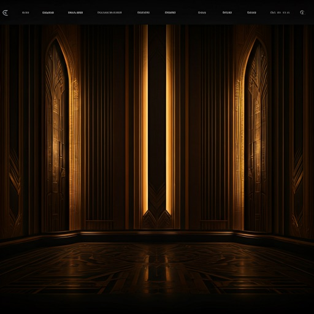

Preserving Digital Elegance
The Golden Age
of Data
A curated collection of the internet's most sophisticated moments. From the early web's structural purity to the streamlined luxury of modern minimalism.
Curated Eras
Step through the corridors of time. Our curators have selected the most definitive aesthetic movements in digital history.

The Jazz Age UI
The 1920s meet the 2020s in this experimental interface focused on symmetry and metallic textures.
Explore Collection arrow_right_altBauhaus Structure
Form follows function in this clinical study of grid-based layout systems.
Modern Luxury
Minimalism refined for the ultra-high-end digital landscape.
Timelessness
Digital artifacts don't age; they only become more classic.
The Imperial
Scriptum
Our premier artifact for the month. This digital translation of early 20th-century craftsmanship features custom-rendered gold foiling and a typography system designed for eternal legibility.
Join the Registry
Receive a monthly compendium of the world's most beautiful digital archeology directly in your private study.